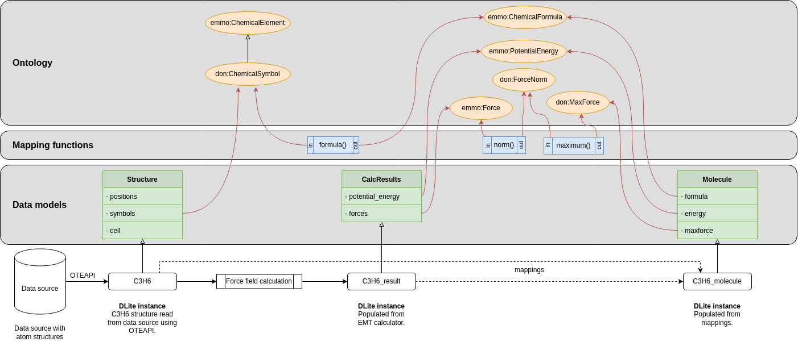

DLITE transform
Semantic interoperability
DLITE Transformation Case Study Infobox
- Author: Jesper Friis (@jesper-friis)
- Last updated: 2025-03-17
- Mapping Type:
- Status of this case study:
Semantic transformations.
Domain¶
Any applied scientific domain dealing with semantic data.
Purpose of the mapping¶
Semantic interoperability
Other purpose of the mapping¶
Can also be used for data integration.
Type of mapped resources¶
By combining the the use case of Semantic mappings of datamodels with mappings of input and output of mapping functions to ontological concepts, it is possible to obtain semantically driven data transformations.
The figure below shows three datamodels and three mapping functions that are all mapped to ontological concepts.
 Figure 1. Example of semantic transformations.
Lets assume that we have instances of the Structure and CalcResults datamodels (named C3H6 and C3H6_result in the figure). Given that it is possible to ask a semantic system to instantiate an instance of the Molecule datamodel. If the system can find a route from the properties of the Molecule datamodel, via the mappings and mapping functions, to existing data, it will be able to return a Molecule instance.
This is a very powerful use of semantic mappings that enables seamless data integration. It allows independent data providers document their datasets by creating datamodels for them and map them to ontologies. An data consumer can then document what data he/she needs by creating a datamodel for that and map it to the ontologies. With support from an ontologist that may provide generic mapping functions enabling generic transformations between individuals of different ontological concepts, the data consumer is then able to get a selection of the available data represented in the form he/she needs it in. Note that the data consumer does not need to know anything about the structure of the existing datasets.
Links to an existing mappings¶
An implementation of semantic transformations is available on https://github.com/SINTEF/dlite/tree/master/examples/mappings Note that the mappings does not necessary have to be complete in order to be useful. In this example the mappings are entered progammaticrally in Python, but under the hood are they stored in the knowledge base as a set of RDF triples of the form:
<source IRI> refs:subClassOf <target IRI> .
Hence, it is easy to enter the mappings in a declarative way.
Tools used for creating the mapping¶
Type of mapping relations¶
Main mapping relation: rdfs:subClassOf
Note: Before we used the non-standard map:mapsTo relation. This relation may still be seen in examples.
Examples (samples) of different types of mapping implementations¶
Mapping the data models may look like this:
@prefix struct: <http://onto-ns.org/meta/dlite/0.1/Structure#> .
@prefix cr: <http://onto-ns.org/meta/dlite/0.1/CalcResult#> .
@prefix mol: <http://onto-ns.org/meta/dlite/0.1/Molecule#> .
@prefix rdfs: <http://www.w3.org/2000/01/rdf-schema#> .
@prefix emmo: <https://w3id.org/emmo#> .
@prefix don: <http://example.com/demo-ontology#> .
struct:symbols rdfs:subClassOf don:ChemicalSymbol .
cr:potential_energy rdfs:subClassOf emmo:PotentialEnergy .
cr:forces rdfs:subClassOf emmo:Force .
mol:formula rdfs:subClassOf emmo:ChemicalFormula .
mol:energy rdfs:subClassOf emmo:PotentialEnergy .
mol:maxforce rdfs:subClassOf don:MaxForce .
Here struct:symbols is a unique IRI that refer to the symbols property of the datamodel http://onto-ns.com/meta/0.1/Structure.
Hence, the mapping relation struct:symbols rdfs:subClassOf don:ChemicalSymbol states that the symbols property of the Structure data model is a chemical symbol.
Similar for the other mapping relations.
The mappings for the mapping functions are typically generated via the Tripper API, and are therefore not shown here.
The full RDF representation of the DLite transformation example is as follows:
@prefix : <https://github.com/SINTEF/dlite/tree/master/examples/mappings#> .
@prefix at: <http://onto-ns.com/meta/0.1/Structure#> .
@prefix dcterms: <http://purl.org/dc/terms/> .
@prefix don: <http://example.com/demo-ontology#> .
@prefix emmo: <https://w3id.org/emmo#> .
@prefix mol: <http://onto-ns.com/meta/0.1/Molecule#> .
@prefix oteio: <https://w3id.org/emmo/domain/oteio#> .
@prefix rdfs: <http://www.w3.org/2000/01/rdf-schema#> .
@prefix res: <http://onto-ns.com/meta/0.1/CalcResult#> .
@prefix xsd: <http://www.w3.org/2001/XMLSchema#> .
:formula_4a498652 a emmo:EMMO_4299e344_a321_4ef2_a744_bacfcce80afc ;
rdfs:label "formula"@en ;
dcterms:description "Convert a list of atomic symbols to a chemical formula."@en ;
emmo:EMMO_36e69413_8c59_4799_946c_10b05d266e22 don:ChemicalSymbol ;
emmo:EMMO_c4bace1d_4db0_4cd3_87e9_18122bae2840 don:Formula ;
oteio:hasPythonFunctionName "formula"^^xsd:string ;
oteio:hasPythonModuleName "mappingfunc_module"^^xsd:string .
:maximum_6ddb63c3 a emmo:EMMO_4299e344_a321_4ef2_a744_bacfcce80afc ;
rdfs:label "maximum"@en ;
dcterms:description "Returns the largest element."@en ;
emmo:EMMO_36e69413_8c59_4799_946c_10b05d266e22 don:ForceNorm ;
emmo:EMMO_c4bace1d_4db0_4cd3_87e9_18122bae2840 don:MaxForce ;
oteio:hasPythonFunctionName "maximum"^^xsd:string ;
oteio:hasPythonModuleName "mappingfunc_module"^^xsd:string .
:norm_5c6c64f5 a emmo:EMMO_4299e344_a321_4ef2_a744_bacfcce80afc ;
rdfs:label "norm"@en ;
dcterms:description "Returns the norm array along the given axis (default the last)."@en ;
emmo:EMMO_36e69413_8c59_4799_946c_10b05d266e22 emmo:EMMO_1f087811_06cb_42d5_90fb_25d0e7e068ef ;
emmo:EMMO_c4bace1d_4db0_4cd3_87e9_18122bae2840 don:ForceNorm ;
oteio:hasPythonFunctionName "norm"^^xsd:string ;
oteio:hasPythonModuleName "mappingfunc_module"^^xsd:string .
:C3H6 oteio:hasMeta <http://onto-ns.com/meta/0.1/Structure> ;
oteio:hasUUID "44d14f64-de9d-4131-ac39-2b6305f75e77" ;
rdfs:subClassOf oteio:Instance .
res:forces rdfs:subClassOf emmo:EMMO_1f087811_06cb_42d5_90fb_25d0e7e068ef .
res:potential_energy rdfs:subClassOf emmo:EMMO_4c151909_6f26_4ef9_b43d_7c9e9514883a .
mol:energy rdfs:subClassOf emmo:EMMO_4c151909_6f26_4ef9_b43d_7c9e9514883a .
mol:formula rdfs:subClassOf don:Formula .
mol:maxforce rdfs:subClassOf don:MaxForce .
at:symbols rdfs:subClassOf don:ChemicalSymbol .
:result oteio:hasMeta <http://onto-ns.com/meta/0.1/CalcResult> ;
oteio:hasUUID "f91bbdaa-0c03-4ea3-a35e-0777892ea334" ;
rdfs:subClassOf oteio:Instance .
don:ChemicalSymbol a emmo:EMMO_50d6236a_7667_4883_8ae1_9bb5d190423a ;
rdfs:label "symbols"@en ;
rdfs:subClassOf emmo:EMMO_4f40def1_3cd7_4067_9596_541e9a5134cf .
don:ForceNorm a emmo:EMMO_50d6236a_7667_4883_8ae1_9bb5d190423a ;
rdfs:label "vector"@en ;
rdfs:subClassOf emmo:EMMO_1f087811_06cb_42d5_90fb_25d0e7e068ef .
don:Formula a emmo:EMMO_50d6236a_7667_4883_8ae1_9bb5d190423a .
don:MaxForce a emmo:EMMO_50d6236a_7667_4883_8ae1_9bb5d190423a ;
rdfs:subClassOf emmo:EMMO_1f087811_06cb_42d5_90fb_25d0e7e068ef .
emmo:EMMO_1f087811_06cb_42d5_90fb_25d0e7e068ef a emmo:EMMO_50d6236a_7667_4883_8ae1_9bb5d190423a ;
rdfs:label "array"@en .
The EMMO ontology is used to express the mapping function input (emmo:EMMO_36e69413_8c59_4799_946c_10b05d266e22) and output (emmo:EMMO_c4bace1d_4db0_4cd3_87e9_18122bae2840) as well as some chemical concepts like ChemicalElement and ChemicalFormula.